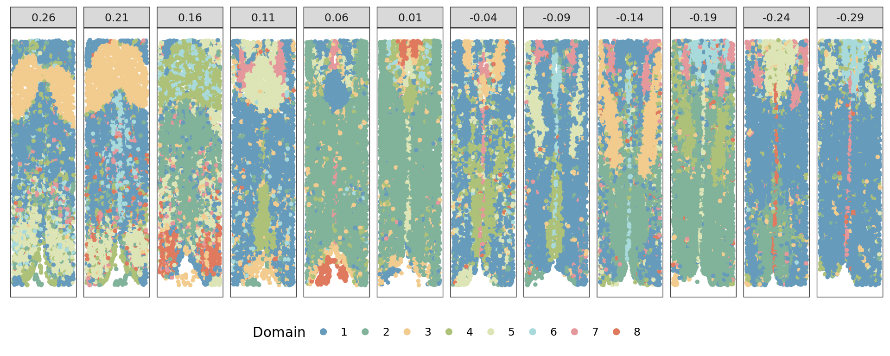

About
Last updated: 2024-07-14
Checks: 7 0
Knit directory: KODAMA-Analysis/
This reproducible R Markdown analysis was created with workflowr (version 1.7.1). The Checks tab describes the reproducibility checks that were applied when the results were created. The Past versions tab lists the development history.
Great! Since the R Markdown file has been committed to the Git repository, you know the exact version of the code that produced these results.
Great job! The global environment was empty. Objects defined in the global environment can affect the analysis in your R Markdown file in unknown ways. For reproduciblity it’s best to always run the code in an empty environment.
The command set.seed(20240618) was run prior to running
the code in the R Markdown file. Setting a seed ensures that any results
that rely on randomness, e.g. subsampling or permutations, are
reproducible.
Great job! Recording the operating system, R version, and package versions is critical for reproducibility.
Nice! There were no cached chunks for this analysis, so you can be confident that you successfully produced the results during this run.
Great job! Using relative paths to the files within your workflowr project makes it easier to run your code on other machines.
Great! You are using Git for version control. Tracking code development and connecting the code version to the results is critical for reproducibility.
The results in this page were generated with repository version 0051854. See the Past versions tab to see a history of the changes made to the R Markdown and HTML files.
Note that you need to be careful to ensure that all relevant files for
the analysis have been committed to Git prior to generating the results
(you can use wflow_publish or
wflow_git_commit). workflowr only checks the R Markdown
file, but you know if there are other scripts or data files that it
depends on. Below is the status of the Git repository when the results
were generated:
Ignored files:
Ignored: .RData
Ignored: .Rhistory
Untracked files:
Untracked: .h5seurat
Untracked: analysis/Single-cell.Rmd
Untracked: code/VisiumHD_CRC_download.sh
Untracked: data/Pathology.csv
Unstaged changes:
Deleted: _site.yml
Deleted: analysis/DLPFC.Rmd
Deleted: analysis/about.Rmd
Deleted: data/Moffitt_and_Bambah-Mukku_et_al_merfish_all_cells.csv
Note that any generated files, e.g. HTML, png, CSS, etc., are not included in this status report because it is ok for generated content to have uncommitted changes.
These are the previous versions of the repository in which changes were
made to the R Markdown (analysis/MERFISH.Rmd) and HTML
(docs/MERFISH.html) files. If you’ve configured a remote
Git repository (see ?wflow_git_remote), click on the
hyperlinks in the table below to view the files as they were in that
past version.
| File | Version | Author | Date | Message |
|---|---|---|---|---|
| Rmd | 0051854 | Stefano Cacciatore | 2024-07-14 | Start my new project |
| Rmd | 0638f93 | GitHub | 2024-07-08 | Update MERFISH.Rmd |
| html | d3de9e1 | GitHub | 2024-07-08 | Update MERFISH.html |
| html | 32f206e | GitHub | 2024-07-08 | Update MERFISH.html |
| html | 940ec13 | GitHub | 2024-07-04 | Update MERFISH.html |
| Rmd | 9ee53df | GitHub | 2024-06-26 | Update MERFISH.Rmd |
| html | 35e8f25 | Stefano Cacciatore | 2024-06-26 | Update docs with MERFISH.html |
| Rmd | c3eee75 | GitHub | 2024-06-26 | Update MERFISH.Rmd |
| Rmd | e7ddec6 | GitHub | 2024-06-26 | Update MERFISH.Rmd |
| Rmd | eb29180 | GitHub | 2024-06-26 | Update MERFISH.Rmd |
| Rmd | bd1988e | GitHub | 2024-06-26 | Update MERFISH.Rmd |
| Rmd | 911564c | GitHub | 2024-06-26 | Update MERFISH.Rmd |
| Rmd | 246f0bd | GitHub | 2024-06-25 | Update MERFISH.Rmd |
| html | 20a6dac | Stefano Cacciatore | 2024-06-25 | Update docs with MERFISH.html |
| Rmd | e56c4ff | GitHub | 2024-06-20 | Update MERFISH.Rmd |
| Rmd | 9df203d | GitHub | 2024-06-20 | Update MERFISH.Rmd |
| Rmd | be3cdeb | GitHub | 2024-06-20 | Update MERFISH.Rmd |
| Rmd | 2e7fa5e | GitHub | 2024-06-20 | Update MERFISH.Rmd |
| Rmd | a21b903 | GitHub | 2024-06-20 | Update MERFISH.Rmd |
| html | ee4ee17 | GitHub | 2024-06-19 | Add files via upload |
| Rmd | 615fc05 | GitHub | 2024-06-19 | Add files via upload |
Describe your project.
MERFISH Data Analysis
The molecular imaging technology MERFISH (Multiplexed Error-Robust Fluorescence In Situ Hybridization) has revolutionized RNA mapping at the cellular level with unmatched spatial precision. This technique enables the simultaneous visualization of numerous genes within individual cells, offering unique insights into molecular processes in biological tissues. MERFISH data provides detailed information on cell structure and function, paving the way for new discoveries in cellular and molecular biology.
The dataset analyzed, as presented in this article, includes information on 36 mice from the hypothalamic preoptic region of the brain, derived from samples taken from various regions of the same animal. The “Bregma” column indicates the slice location in Bregma coordinates, an anatomical reference point used in neuroscience.
Our focus is on advanced analysis of MERFISH data from biological tissues, introducing key advancements such as a 12 Extended Layer Analysis method for detailed tissue structure understanding and a 3D clustering feature for accurately representing the spatial relationships and RNA interactions within cells.
Our main objective is to integrate multiple tissue sections for unified analysis across different samples. We employ data preprocessing, dimension reduction, and advanced clustering techniques to explore the relationship between tissue structure and cellular behavior, highlighting spatial variations and gene expression patterns associated with specific biological functions.
Load necessary libraries
library(Seurat)
library(KODAMAextra)
library(ggplot2)
library(NMI)
library(mclust)
library(bluster)
library(igraph)Downloading the Data
The data is downloaded from this link for the continuation of the work.
# Load data
data <- read.csv("../Merfish/hypothalamic_preoptic_region/Moffitt_and_Bambah-Mukku_et_al_merfish_all_cells.csv")
data <- as.data.frame(data)Data Pre-processing
In our data preprocessing process, we have undertaken a rigorous approach to ensure the quality and relevance of the information we use in our analysis. With a total of 170 genes initially included in our data, our first step was to eliminate the “Blank” genes, which are control or background genes that do not contribute to our main analysis. This elimination allowed us to reduce our data set to 165 genes. Subsequently, we identified and removed the “Fos” gene, suspected of having an unwanted or disruptive impact on our data, leaving a total of 164 genes for our analysis. These initial cleaning steps are crucial to ensure that the data we use is reliable and suitable for our analysis objectives. By then filtering the data to retain only those corresponding to Animal_ID 1 and specific Bregma values, we ensure that we focus on a subset relevant to our study. This preprocessing process is essential to prepare our data properly, by eliminating unnecessary elements and focusing on the most relevant data for our subsequent analysis.
# Data cleaning
colnames_data <- colnames(data)
blankgenes <- grep("Blank", colnames_data)
fos_index <- which(colnames(data) == "Fos")
df <- data[, -c(fos_index, blankgenes)]
selected_bregma <- unique(df$Bregma)
# Filter data for Animal_ID 1 and specific Bregma values
exp <- subset(df, Animal_ID == 1 & Bregma %in% selected_bregma)
rownames(exp) <- exp$Cell_ID
data_list <- split(exp, exp$Bregma)
data_list <- data_list[match(selected_bregma, names(data_list))]
# Initialize lists
xy <- list()
pca <- list()
v <- list()
kk <- list()
vis <- list()
pred <- list()
refine <- list()
cons <- list()
ARI <- list()
NMI <- list()
# Normalization and dimension reduction by PCA
for (i in names(data_list)) {
print(i)
x <- data_list[[i]]$Centroid_X - min(data_list[[i]]$Centroid_X)
y <- data_list[[i]]$Centroid_Y - min(data_list[[i]]$Centroid_Y)
xy[[i]] <- cbind(x, y)
rownames(xy[[i]]) <- rownames(data_list[[i]])
cons[[i]] <- t(data_list[[i]][, 10:ncol(data_list[[i]])])
colnames(cons[[i]]) <- rownames(data_list[[i]])
v[[i]] <- t(LogNormalize(cons[[i]]))
#dimensionality reduction BY Principal Component Analysis (PCA)
pca[[i]] <- prcomp(v[[i]], scale. = TRUE)$x[, 1:50]
# KODAMA clustering
kk[[i]] <- KODAMA.matrix.parallel(pca[[i]], spatial = xy[[i]], FUN = "PLS", landmarks = 10000, n.cores = 4)
vis[[i]] <- KODAMA.visualization(kk[[i]], method = "UMAP")
names(vis[[i]]) <- names(data_list[[i]])
# Graph-based clustering
g <- bluster::makeSNNGraph(as.matrix(vis[[i]]), k = 100)
g_walk <- igraph::cluster_walktrap(g)
pred[[i]] <- as.character(igraph::cut_at(g_walk, no = 8))
refine[[i]] <- refinecluster(pred[[i]], xy[[i]], shape = "hexagon")}[1] "0.26"
socket cluster with 4 nodes on host 'localhost'
================================================================================[1] "Finished parallel computation"
[1] "Calculation of dissimilarity matrix..."
================================================================================
[1] "0.21"
socket cluster with 4 nodes on host 'localhost'
================================================================================[1] "Finished parallel computation"
[1] "Calculation of dissimilarity matrix..."
================================================================================
[1] "0.16"
socket cluster with 4 nodes on host 'localhost'
================================================================================[1] "Finished parallel computation"
[1] "Calculation of dissimilarity matrix..."
================================================================================
[1] "0.11"
socket cluster with 4 nodes on host 'localhost'
================================================================================[1] "Finished parallel computation"
[1] "Calculation of dissimilarity matrix..."
================================================================================
[1] "0.06"
socket cluster with 4 nodes on host 'localhost'
================================================================================[1] "Finished parallel computation"
[1] "Calculation of dissimilarity matrix..."
================================================================================
[1] "0.01"
socket cluster with 4 nodes on host 'localhost'
================================================================================[1] "Finished parallel computation"
[1] "Calculation of dissimilarity matrix..."
================================================================================
[1] "-0.04"
socket cluster with 4 nodes on host 'localhost'
================================================================================[1] "Finished parallel computation"
[1] "Calculation of dissimilarity matrix..."
================================================================================
[1] "-0.09"
socket cluster with 4 nodes on host 'localhost'
================================================================================[1] "Finished parallel computation"
[1] "Calculation of dissimilarity matrix..."
================================================================================
[1] "-0.14"
socket cluster with 4 nodes on host 'localhost'
================================================================================[1] "Finished parallel computation"
[1] "Calculation of dissimilarity matrix..."
================================================================================
[1] "-0.19"
socket cluster with 4 nodes on host 'localhost'
================================================================================[1] "Finished parallel computation"
[1] "Calculation of dissimilarity matrix..."
================================================================================
[1] "-0.24"
socket cluster with 4 nodes on host 'localhost'
================================================================================[1] "Finished parallel computation"
[1] "Calculation of dissimilarity matrix..."
================================================================================
[1] "-0.29"
socket cluster with 4 nodes on host 'localhost'
================================================================================[1] "Finished parallel computation"
[1] "Calculation of dissimilarity matrix..."
================================================================================#Visualization For better visualization of the results, it is
essential to import the vis.R file at this stage.
# Importing the vis.R code
source("data/vis.R")Visualizing the results of the Kodama clustering, a dimensionality reduction method that enhances data understanding.
# Define colors for visualizations
cols <- c("#669bbc", "#81b29a", "#f2cc8f", "#adc178",
"#dde5b6", "#a8dadc", "#e5989b", "#e07a5f")
# Visualize clusters
plotClustersFacet(xy, pred, selected_bregma, size = 0.2) +
scale_color_manual("Domain", values = cols) +
guides(color = guide_legend(nrow = 1, override.aes = list(size = 2)))
| Version | Author | Date |
|---|---|---|
| 20a6dac | Stefano Cacciatore | 2024-06-25 |
plotClustersFacet(xy, refine, selected_bregma, size = 1) +
scale_color_manual("Domain", values = cols) +
guides(color = guide_legend(nrow = 1, override.aes = list(size = 2)))
| Version | Author | Date |
|---|---|---|
| 20a6dac | Stefano Cacciatore | 2024-06-25 |
This script illustrates a standard approach to Merfish data analysis, showcasing the use of commonly used bioinformatics tools. It provides a comprehensive overview of the Merfish data analysis and visualization process, crucial for understanding the spatial distribution of RNA in cells.
sessionInfo()R version 4.4.0 (2024-04-24)
Platform: x86_64-pc-linux-gnu
Running under: Ubuntu 20.04.6 LTS
Matrix products: default
BLAS: /usr/lib/x86_64-linux-gnu/blas/libblas.so.3.9.0
LAPACK: /usr/lib/x86_64-linux-gnu/lapack/liblapack.so.3.9.0
locale:
[1] LC_CTYPE=en_US.UTF-8 LC_NUMERIC=C
[3] LC_TIME=en_US.UTF-8 LC_COLLATE=en_US.UTF-8
[5] LC_MONETARY=en_US.UTF-8 LC_MESSAGES=en_US.UTF-8
[7] LC_PAPER=en_US.UTF-8 LC_NAME=C
[9] LC_ADDRESS=C LC_TELEPHONE=C
[11] LC_MEASUREMENT=en_US.UTF-8 LC_IDENTIFICATION=C
time zone: Etc/UTC
tzcode source: system (glibc)
attached base packages:
[1] parallel stats graphics grDevices utils datasets methods
[8] base
other attached packages:
[1] igraph_2.0.3 bluster_1.14.0 mclust_6.1.1 NMI_2.0
[5] ggplot2_3.5.1 KODAMAextra_1.0 e1071_1.7-14 doParallel_1.0.17
[9] iterators_1.0.14 foreach_1.5.2 KODAMA_3.1 umap_0.2.10.0
[13] Rtsne_0.17 minerva_1.5.10 Seurat_5.1.0 SeuratObject_5.0.2
[17] sp_2.1-4 workflowr_1.7.1
loaded via a namespace (and not attached):
[1] RColorBrewer_1.1-3 rstudioapi_0.16.0 jsonlite_1.8.8
[4] magrittr_2.0.3 spatstat.utils_3.0-5 farver_2.1.2
[7] rmarkdown_2.27 fs_1.6.4 vctrs_0.6.5
[10] ROCR_1.0-11 spatstat.explore_3.2-7 askpass_1.2.0
[13] htmltools_0.5.8.1 BiocNeighbors_1.22.0 sass_0.4.9
[16] sctransform_0.4.1 parallelly_1.37.1 KernSmooth_2.23-24
[19] bslib_0.7.0 htmlwidgets_1.6.4 ica_1.0-3
[22] plyr_1.8.9 plotly_4.10.4 zoo_1.8-12
[25] cachem_1.1.0 whisker_0.4.1 mime_0.12
[28] lifecycle_1.0.4 pkgconfig_2.0.3 Matrix_1.7-0
[31] R6_2.5.1 fastmap_1.2.0 fitdistrplus_1.1-11
[34] future_1.33.2 shiny_1.8.1.1 digest_0.6.36
[37] colorspace_2.1-0 S4Vectors_0.42.1 patchwork_1.2.0
[40] ps_1.7.7 rprojroot_2.0.4 tensor_1.5
[43] RSpectra_0.16-1 irlba_2.3.5.1 labeling_0.4.3
[46] progressr_0.14.0 fansi_1.0.6 spatstat.sparse_3.1-0
[49] httr_1.4.7 polyclip_1.10-6 abind_1.4-5
[52] compiler_4.4.0 proxy_0.4-27 withr_3.0.0
[55] BiocParallel_1.38.0 fastDummies_1.7.3 highr_0.11
[58] MASS_7.3-61 openssl_2.2.0 tools_4.4.0
[61] lmtest_0.9-40 httpuv_1.6.15 future.apply_1.11.2
[64] goftest_1.2-3 glue_1.7.0 callr_3.7.6
[67] nlme_3.1-165 promises_1.3.0 grid_4.4.0
[70] getPass_0.2-4 cluster_2.1.6 reshape2_1.4.4
[73] snow_0.4-4 generics_0.1.3 gtable_0.3.5
[76] spatstat.data_3.1-2 class_7.3-22 tidyr_1.3.1
[79] data.table_1.15.4 utf8_1.2.4 BiocGenerics_0.50.0
[82] spatstat.geom_3.2-9 RcppAnnoy_0.0.22 ggrepel_0.9.5
[85] RANN_2.6.1 pillar_1.9.0 stringr_1.5.1
[88] spam_2.10-0 RcppHNSW_0.6.0 later_1.3.2
[91] splines_4.4.0 dplyr_1.1.4 lattice_0.22-6
[94] survival_3.7-0 deldir_2.0-4 tidyselect_1.2.1
[97] miniUI_0.1.1.1 pbapply_1.7-2 knitr_1.48
[100] git2r_0.33.0 gridExtra_2.3 scattermore_1.2
[103] stats4_4.4.0 xfun_0.45 matrixStats_1.3.0
[106] stringi_1.8.4 lazyeval_0.2.2 yaml_2.3.9
[109] evaluate_0.24.0 codetools_0.2-20 tibble_3.2.1
[112] cli_3.6.3 uwot_0.2.2 xtable_1.8-4
[115] reticulate_1.38.0 munsell_0.5.1 processx_3.8.4
[118] jquerylib_0.1.4 Rcpp_1.0.12 doSNOW_1.0.20
[121] globals_0.16.3 spatstat.random_3.2-3 png_0.1-8
[124] dotCall64_1.1-1 listenv_0.9.1 viridisLite_0.4.2
[127] scales_1.3.0 ggridges_0.5.6 leiden_0.4.3.1
[130] purrr_1.0.2 rlang_1.1.4 cowplot_1.1.3